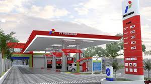

Program Pertamina
Mari Mengenal BBM
BBM adalah singkatan dari Bahan Bakar Minyak. Istilah ini sering digunakan untuk menyebut bahan bakar yang digunakan pada mobil dan sepeda motor. Padahal, penggunaan BBM sendiri tidak hanya terbatas pada kendaraan bermotor. Beberapa jenis BBM bahkan digunakan untuk jenis kendaraan lain seperti pesawat terbang. Untuk mengetahui serba-serbi tentang BBM, mari pelajari penjelasannya berikut ini

Pertamax
Merupakan bahan bakar bensin dengan angka oktan minimal 92 berstandar international. Pertamax sangat direkomendasikan untuk digunakan pada kendaraan yang memiliki kompresi rasio 10:1 hingga 11:1 atau kendaraan berbahan bakar bensin yang menggunakan teknologi setara dengan Electronic Fuel Injection (EFI). Dengan ecosave technology, Pertamax mampu membersihkan bagian dalam mesin (detergency), Pertamax juga dilengkapi dengan pelindung anti karat pada dinding tangki kendaraan, saluran bahan bakar dan ruang bakar mesin (corrotion inhibitor), serta mampu menjaga kemurnian bahan bakar dari campuran air sehingga pembakaran menjadi lebih sempurna (demulsifier).Pertalite
Merupakan bahan bakar gasoline yang memiliki angka oktan 90 serta berwarna hijau terang dan jernih ini sangat tepat digunakan oleh kendaraan dengan kompresi 9:1 hingga 10:1. Bahan bakar Pertalite memiliki angka oktan yang lebih tinggi daripada bahan bakar Premium 88 sehingga lebih tepat digunakan untuk kendaraan bermesin bensin yang saat ini beredar di Indonesia. Dengan tambahan additive, Pertalite mampu menempuh jarak yang lebih jauh dengan tetap memastikan kualitas dan harga yang terjangkau.Dexlite
Merupakan varian bahan bakar diesel terbaru dari Pertamina yang diluncurkan pada tanggal 15 April 2016. Dexlite, member terbaru dari Dex Series, memiliki angka cetane minimal 51 dan mengandung Sulfur maksimal 1200 ppm. Dexlite sangat cocok bagi Anda yang menginginkan bahan bakar diesel yang bertenaga untuk mobil diesel Anda namun dengan harga yang terjangkau.